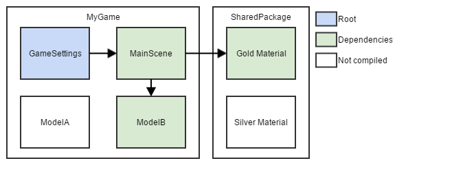

アセットの制御
Warning
このセクションの内容はもう古いので、参考程度に使ってください。
これまでは、ゲームパッケージのアセットとその依存関係は、すべてがゲームの一部としてコンパイルされていました。
1.3からは、ゲームに必要なアセットだけがコンパイルされます。
ご心配なく、作業の大半は自動的に行われます。Stride は、新しいゲームセッティングアセットから依存関係を収集します。ゲームセッティングアセットは既定のシーンを参照しているので、必要なアセット参照（スクリプトから参照したいモデル、マテリアル、アセットなど）を、簡単に探することができます。
スクリプトで Content.Load を使って何かをロードしていた場合でも、これらのアセットには、エディターで "Mark as Root" というタグを付けることができます。
しかし今では、代わりに、スクリプトでフィールドを作成し、エディターで直接記入するという方法を推奨しています。すべてのサンプルコードはこの新しい方法に更新されていますので、ぜひチェックしてみてください。
どのアセットがコンパイルされる？
プロジェクトでコンパイルされてパッケージ化されるアセットは、以下の通りです。
- ルートアセット（青）
- いくつかのアセット（ゲームセッティング、シェーダーなど）では自動
- "Mark as Root" が明示的に指定されたアセット
- ルートアセットの依存関係（緑）
- ゲームセッティングが収集されるということは、既定のシーンとその依存関係も同じようにコンパイルされるということを意味します（モデルや、他のアセットを指すスクリプトフィールドメンバーなども含まれます）。
- また、スクリプトは、（"Mark as Root" を必要とする）Content.Loadから、エディター内でドラッグ＆ドロップで設定することができるフィールドメンバーに切り替えることをお勧めします。これにより、暗黙の依存関係が作られ、そのアセットも強制的にコンパイルされるようになります。
- その他すべて（白）（ルートとしてマークされていないオブジェクトで、かつ、ルートから直接または間接的に参照されていないもの）は、パッケージ化されません。

"Mark as root"
覚えておくべき重要なことは、"Mark as root" は、アセットの一部ではなく、「現在の」パッケージ（ソリューションエクスプローラーで太字になっているもの）に格納されている、ということです。
つまり、現在のパッケージが "MyGame" のとき、シルバーマテリアル（SharedPackage の一部）上で "Mark as Root" にチェックを入れると、その情報が SharedPackage への参照のひとつとして MyGame.sdpkg に格納されるということです。
その結果、複数のゲームから、それぞれが異なる明示的なルートを持っている場合でも、共有パッケージを利用することができます。
関連項目
アセット管理についての詳細は、アセットの管理を参照してください。